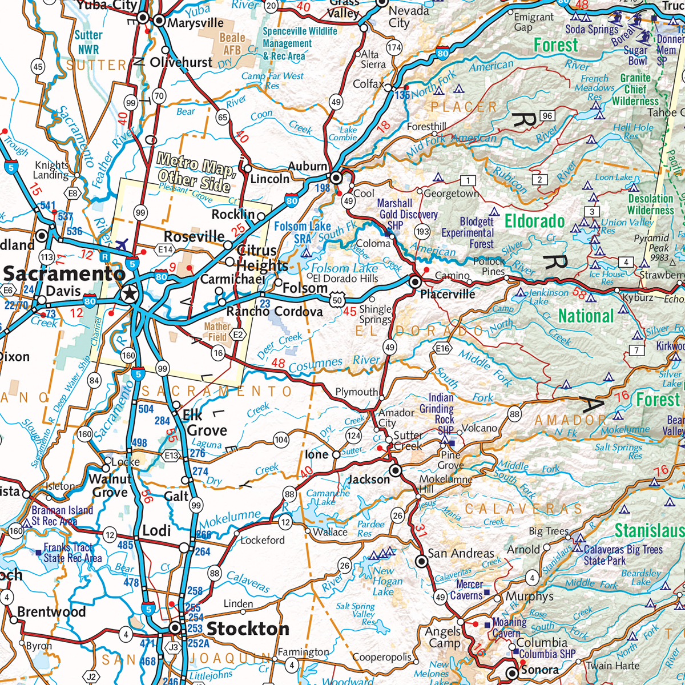
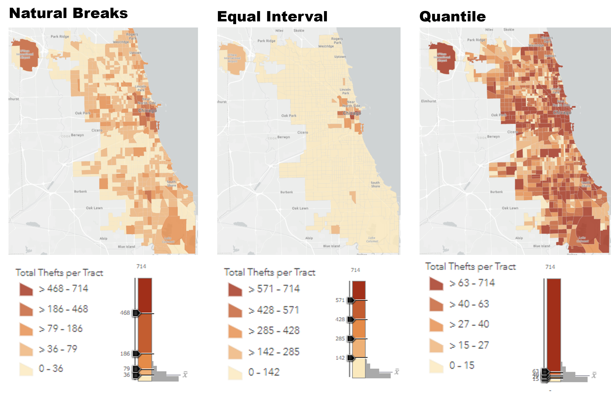

Hello!
Welcome to Week 1 of Web GIS
Overview of today's class
- Introductions
- Course Overview
- The problem with maps
- Create a basic web map in ArcGIS Online
- Zoom Polls
- Introductions
Course Overview
Course Ecosystem
| Zoom | |
|---|---|
| Github |
|
| Blackboard |
|
3 Mains Goals of this Course:
- Technical: students will be able to create interactive, online maps using ArcGIS Online & Leaflet.js
- Effective Design: Students will have a deeper knowledge of effective map design & functionality
- Critical Awareness: Students will develop a critical understanding that maps are not neutral representations of the world
1. Technical: Main Course Tools
Some AGOL Examples:
Some Leaflet Examples:
Pros/Cons of AGOL
| Pros | |
|---|---|
| Cons |
Pros/Cons of Leaflet
| Pros | |
|---|---|
| Cons |
Weeks 1-4: ArcGIS Online
Weeks 5-8: Leaflet.js
2. Effective Design
- ArcGIS Online is not necessarily easier than Leaflet, but it does afford beginners more design options than Leaflet.
- The first five weeks will be synchronous to allow for discussion on how your maps read to others.
- The last 3 weeks will be more technical in nature, and while discussion will be helpful I am not as concerned with design & Leaflet.
3. Critical Awareness
- Maps are commonly assumed to be scientifically objective representations of the world.
- However, maps are not neutral and by their very nature misrepresent information
All maps must distort information
Okay, technically if you had a 1:1 scale map you could create a totally objective, unbiased map....
How space itself is shown

But also, what is shown in that space
You can't show everything.
Maps are not omni-purpose tools
Usually information is greatly simplified in order to communication a message:

Is this map a completely objective representation of median income?
Nothing is really blatently misrepresented, but let's consider a few "distortions" that had to be made in order to communicate median incomes
Aggregration Considerations

Not only is this unusuable, consider what if you didn't have the exact location of each? Or if it would be unethical to show the exact location of each? What would you do?
Aggregrate the data:

Effects of different clasification methods
Features of ArcGIS Online
- Host Web Maps
- Host Data
- Share Maps
- Create organizational groups for collaboration
- Easily create web apps/story maps
Let's make a web map in AGOL
5 steps:
- Choose Basemap
- Add your Data
- Customize/Select Symbology
- Save
- Share the Finished Product
Assignment 1: Make an AGOL Web Map
Before we do a demonstrations, here are things I want to avoid seeing:


ArcGIS Online Demonstration
Questions?